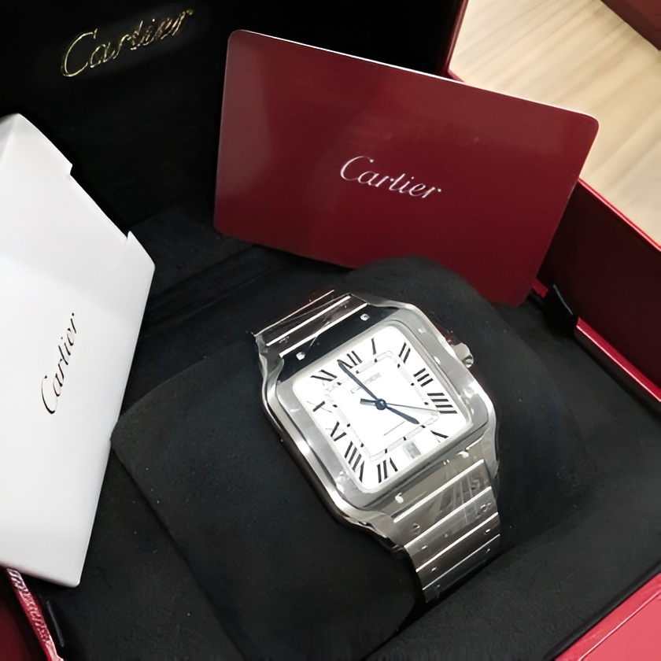

Exploring Iconic Watch Moments in Pop Culture
Watches are not just instruments for telling time; they're also powerful
symbols of status, style, and sophistication. Over the years, luxury watches
have made countless appearances in movies, TV shows, and celebrity culture,
leaving an indelible mark on popular culture. Let's take a journey through some
of the most iconic watch moments in pop culture
and explore the significance of these timepieces beyond their functionality.
- James Bond and the Omega Seamaster:
Since the 1990s, the Omega Seamaster has been synonymous with James Bond,
the suave and sophisticated British spy. Featured prominently in films
like "GoldenEye," "Casino Royale," and "Skyfall," the Omega Seamaster
has become an integral part of Bond's
iconic style, representing his impeccable taste and unwavering confidence.
- Steve McQueen and the TAG Heuer Monaco:
In the 1971 film "Le Mans," Steve McQueen famously sported a
TAG Heuer Monaco on his wrist, solidifying the watch's status
as a timeless classic. The square-shaped case and bold design
of the Monaco perfectly complemented McQueen's rugged
yet refined persona, cementing its place in watchmaking history.
- Paul Newman and the Rolex Daytona:
The Rolex Daytona attained legendary status thanks in part to its
association with actor and racing enthusiast Paul Newman. Photographed
wearing a Daytona on numerous occasions, Newman's endorsement catapulted
the watch to cult status among collectors, earning it the nickname
"Paul Newman Daytona"
and making it one of the most sought-after timepieces in the world.
Conclusion:
The iconic watch moments in pop culture highlight the enduring appeal
and cultural significance of luxury timepieces. Whether worn by fictional
characters on the silver screen or adorned by celebrities on the red carpet,
watches play a pivotal role in shaping our perceptions of style, status, and
sophistication. As we continue to celebrate these timeless symbols of excellence,
we're reminded of the enduring legacy of watchmaking and its ability to
captivate and inspire us across generations.
The Psychology of Luxury: Decoding the Allure of High-End Watches

Luxury watches possess a magnetic allure that transcends their mere
functionality and craftsmanship. They serve as potent symbols that
evoke a multitude of emotions, aspirations, and desires, exerting a
profound influence on the psychology of consumers. In this exploration,
we embark on a fascinating journey into the depths of luxury watch psychology,
unraveling the enigmatic drivers behind
our enduring fascination with these exquisite timepieces.
Luxury watches hold a captivating sway over our psyche, captivating us with
their beauty, craftsmanship, and symbolism. As we delve into the intricacies
of luxury watch psychology, we uncover the hidden forces that shape our
perceptions and fuel our obsession with these timeless treasures
-
Status Symbol: Signaling Success and Prestige:
One of the primary psychological motivations behind owning a luxury
watch is its role as a status symbol. High-end watches signal wealth,
success, and social standing, serving as outward expressions of one's
achievements and aspirations. The visible display of a prestigious watch
on the wrist communicates to others a sense of accomplishment and prestige,
contributing to a heightened sense of self-worth and confidence.
-
Emotional Connection: Cultivating Personal Attachments:
Luxury watches often evoke strong emotional responses and personal attachments,
transcending their material value. Whether inherited from a loved one, received
as a gift for a milestone achievement, or purchased to commemorate a significant
life event, watches become imbued with sentimental value and memories. These
emotional connections deepen the wearer's bond with their timepiece,
transforming it into a cherished heirloom and symbol of enduring relationships.
-
Craftsmanship Appreciation: Celebrating Artistry and Heritage
Beyond their symbolic significance, luxury watches are also revered
for their exceptional craftsmanship, attention to detail, and rich heritage.
Each timepiece represents the culmination of centuries-old traditions, passed
down through generations of skilled artisans and watchmakers. The intricate
mechanisms, exquisite finishes, and meticulous craftsmanship of luxury watches
evoke admiration and appreciation
for the artistry and expertise behind their creation.
-
Sense of Exclusivity: Fostering a Sense of Belonging
Owning a luxury watch grants access to an exclusive club, fostering
a sense of belonging and camaraderie among enthusiasts. Whether through
limited edition releases, bespoke customization options, or invitation-only
events, luxury watch brands create a sense of exclusivity and scarcity that
enhances their allure. The feeling of being part of an elite community of
like-minded individuals adds to the appeal of
luxury watches and reinforces their status as coveted possessions.
-
Investment Potential: Balancing Rationality with Emotion:
For some, the allure of luxury watches lies in their potential as investments,
offering the opportunity for financial growth and wealth preservation. While
rational considerations such as brand reputation, rarity, and market trends
play a role in investment decisions, emotions also play a significant role.
The thrill of acquiring a coveted timepiece, the pride of ownership, and
the anticipation of future appreciation contribute to the emotional appeal
of watch collecting as an investment strategy.
Conclusion:
The psychology of luxury watches is a complex interplay of status,
emotion, craftsmanship, exclusivity, and investment potential.
Understanding these underlying motivations can provide insights
into why we are drawn to high-end timepieces and the profound impact
they have on our lives. Whether as symbols of success, objects of desire,
or expressions of personal identity, luxury watches hold a unique place
in our hearts and minds, transcending
their material value to become cherished artifacts of human experience.
The Evolution of Watch Design: From Classic to Contemporary Styles
Watches have long been more than just timekeeping devices;
they are also expressions of style, craftsmanship, and innovation.
Over the years, watch design has evolved significantly, reflecting
changes in technology, fashion trends, and cultural influences. Let's
take a journey through the history of watch design and
explore the evolution of styles from classic to contemporary.
-
Classic Elegance: Timeless Designs That Endure
Classic watch designs are characterized by their timeless elegance,
understated sophistication, and attention to detail. Inspired by
traditional watchmaking principles, these timepieces often feature
clean dials, slim profiles, and refined aesthetics. Iconic models
like the Cartier Tank, Rolex Datejust, and Patek Philippe Calatrava
exemplify classic design principles,
embodying a sense of timeless luxury that transcends trends and fads.
-
Art Deco Glamour: A Celebration of Geometric Shapes and Ornate Details
The Art Deco movement of the early 20th century brought a new sense
of glamour and sophistication to watch design. Characterized by bold
geometric shapes, lavish ornamentation, and luxurious materials, Art
Deco watches exude an air of opulence and extravagance. Brands like
Jaeger-LeCoultre, Omega, and Vacheron Constantin embraced Art Deco aesthetics,
producing watches with striking designs that captured the spirit of the era.
-
Sporty Chic: Combining Functionality with Style
The rise of sports and leisure activities in the 20th century gave
birth to a new genre of watches designed for active lifestyles.
Sporty watches are characterized by their rugged construction,
bold dials, and practical features such as chronographs, tachymeters,
and diving bezels. Brands like Rolex, Omega, and TAG Heuer are renowned
for their iconic sports models, including the Rolex Submariner, Omega Speedmaster,
and TAG Heuer Carrera, which have become enduring symbols of adventure and exploration.
-
Contemporary Minimalism: Embracing Clean Lines and Modern Aesthetics
In recent years, minimalist design has emerged as a dominant trend in
watchmaking, emphasizing simplicity, functionality, and understated
elegance. Contemporary watches feature clean dials, sleek cases, and
minimalist detailing, reflecting a shift towards a more refined and
restrained aesthetic. Brands like Nomos Glashütte, Junghans, and Uniform
Wares are at the forefront of contemporary watch design, offering timepieces
that blend modern aesthetics with traditional craftsmanship.
 Since the 1990s, the Omega Seamaster has been synonymous with James Bond, the suave and sophisticated British spy. Featured prominently in films like "GoldenEye," "Casino Royale," and "Skyfall," the Omega Seamaster has become an integral part of Bond's iconic style, representing his impeccable taste and unwavering confidence.
Since the 1990s, the Omega Seamaster has been synonymous with James Bond, the suave and sophisticated British spy. Featured prominently in films like "GoldenEye," "Casino Royale," and "Skyfall," the Omega Seamaster has become an integral part of Bond's iconic style, representing his impeccable taste and unwavering confidence. In the 1971 film "Le Mans," Steve McQueen famously sported a TAG Heuer Monaco on his wrist, solidifying the watch's status as a timeless classic. The square-shaped case and bold design of the Monaco perfectly complemented McQueen's rugged yet refined persona, cementing its place in watchmaking history.
In the 1971 film "Le Mans," Steve McQueen famously sported a TAG Heuer Monaco on his wrist, solidifying the watch's status as a timeless classic. The square-shaped case and bold design of the Monaco perfectly complemented McQueen's rugged yet refined persona, cementing its place in watchmaking history. The Rolex Daytona attained legendary status thanks in part to its association with actor and racing enthusiast Paul Newman. Photographed wearing a Daytona on numerous occasions, Newman's endorsement catapulted the watch to cult status among collectors, earning it the nickname "Paul Newman Daytona" and making it one of the most sought-after timepieces in the world.
The Rolex Daytona attained legendary status thanks in part to its association with actor and racing enthusiast Paul Newman. Photographed wearing a Daytona on numerous occasions, Newman's endorsement catapulted the watch to cult status among collectors, earning it the nickname "Paul Newman Daytona" and making it one of the most sought-after timepieces in the world.